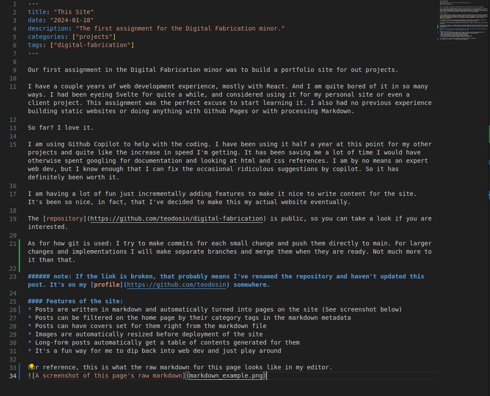

Our first assignment in the Digital Fabrication minor was to build a portfolio site for out projects.
I have a couple years of web development experience, mostly with React. And I am quite bored of it in so many ways. I had been eyeing Svelte for quite a while, and considered using it for my personal site or even a client project. This assignment was the perfect excuse to start learning it. I also had no previous experience building static websites or doing anything with Github Pages or with processing Markdown.
So far? I love it.
I am using Github Copilot to help with the coding. I have been using it half a year at this point for my other projects and quite like the increase in speed I’m getting. It has been saving me a lot of time I would have otherwise spent googling for documentation and looking at html and css references. I am by no means an expert web dev, but I know enough that I can fix the occasional ridiculous suggestions by copilot. So it has definitely been worth it.
I am having a lot of fun just incrementally adding features to make it nice to write content for the site. It’s been so nice, in fact, that I’ve decided to make this my actual website eventually.
The repository is public, so you can take a look if you are interested.
As for how git is used: I try to make commits for each small change and push them directly to main. For larger changes and implementations I will make separate branches and merge them when they are ready. Not much more to it than that.
note: If the link is broken, that probably means I’ve renamed the repository and haven’t updated this post. It’s on my profile somewhere.
Features of the site:
- Posts are written in markdown and automatically turned into pages on the site (See screenshot below)
- Posts can be filtered on the home page by their category tags in the markdown metadata
- Posts can have covers set for them right from the markdown file
- Images are automatically resized before deployment of the site
- Long-form posts automatically get a table of contents generated for them
- It’s a fun way for me to dip back into web dev and just play around
For reference, this is what the raw markdown for this page looks like in my editor. 
Here’s something useful: automatic resizing of images when building the site.
I have a resize-images.js script that gets called before the site is built.
// package.json
"scripts": {
"dev": "node src/lib/utils/generate-entries.js && vite dev",
"resize-images": "node src/lib/utils/resize-images.js",
// snip
"build": "npm run resize-images && vite build",
// snip
"deploy": "npm run build && npx gh-pages -d build -t true"
},I am currently deploying the site manually from the terminal when I choose to. I run the command npm run deploy, which in turn calls the build script. That, in turn runs the resize-images script before finally building the site. The next command always waits for the previous one to complete before starting, so it’s reliable.
Here’s the actual script in its entirety.
// src/lib/utils/resize-images.js
import { readdir, unlink, rename } from 'fs';
import { join } from 'path';
import sharp from 'sharp';
const directoryPath = join(process.cwd(), 'static');
const maxWidth = 1080;
const maxHeight = 1080;
readdir(directoryPath, (err, files) => {
if (err) {
return console.log('Unable to scan directory: ' + err);
}
files.forEach((file) => {
const filePath = join(directoryPath, file);
const tempFilePath = `${filePath}_temp`;
sharp(filePath)
.resize(maxWidth, maxHeight, {
fit: 'inside',
withoutEnlargement: true,
})
.toFile(tempFilePath, (err) => {
if (err) {
console.log('Error resizing image: ', err);
} else {
unlink(filePath, (err) => {
if (err) {
console.log('Error deleting original file: ', err);
} else {
rename(tempFilePath, filePath, (err) => {
// Omitted error handling at the end.
The script goes through each file in my static folder. For each image it creates a new, resized version of it, then replaces the old image with it. This was necessary to do in two steps because you can’t delete or overwrite the old file while you’re still resizing it.